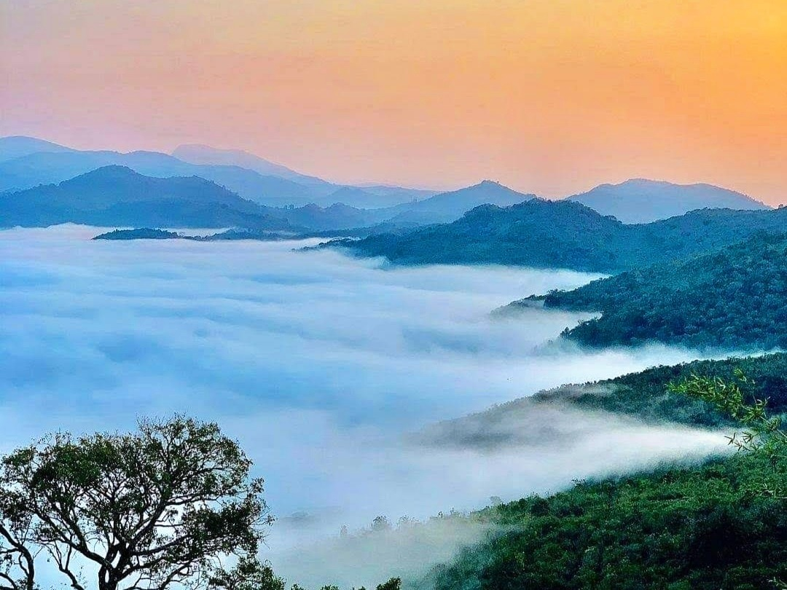

Lambasingi
Misty hill station, known as the ‘Kashmir of Andhra Pradesh’, famous for its cold climate..
Cost to Stay: ₹2000 per night

Maredumilli
A serene getaway known for its waterfalls, dense forests, and rich tribal culture experiences.
Cost to Stay: ₹5000 per night

Araku valley
A picturesque hill station in the Eastern Ghats, known for its coffee plantations and attractions like Borra Caves.
Cost to Stay: ₹5000/night